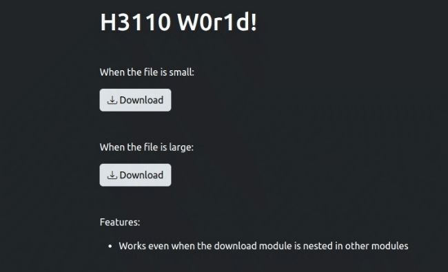
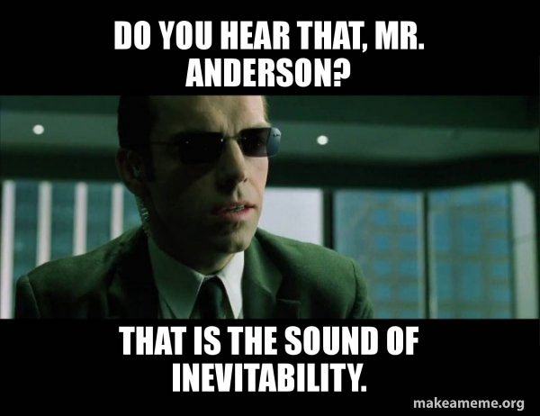
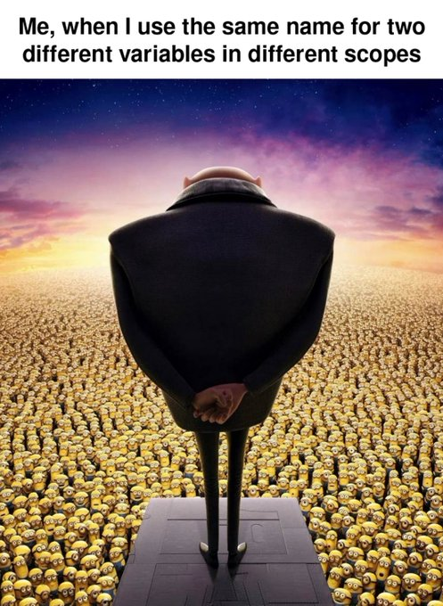

Demo

Introduction
In an older post I explained how to add loading spinners to download buttons when the download is in progress using shinyjs.
I did so by rendering a fake download button which, when clicked, triggered the real download button. Honestly, it was kind of cumbersome.
Today, as I was walking in the streets of R Shiny articles by Posit, I came across JavaScript events in shiny.
I was intrigued. It opened my eyes to the endless possibilities of using JS with shiny. This blog post is just the tip of that iceberg.
Motivation
Allow me to let you in on a small secret… Come here. Come closer.
In one way or another JavaScript is inevitable.
I’ve spent so much time trying to run away from JS, forcing R to do what JS was purposed to do.
In the end I’ve come to one conclusion: Smith was always right.

As a matter of fact, I’m beginning to enjoy learning and using it.
The module
I refuse to NOT use modules. So, here we are.
UI
This is the simplest, there’s nothing to explain.
I have a reminder for you though: It’s always a missing call to NS(). Thank me later.
mod_dnld_ui <- \(id) {
ns <- NS(id)
tagList(
downloadButton(
outputId = ns("download"),
icon = icon(name = NULL, class = "bi bi-download")
)
)
}Server
mod_dnld_server <- \(id, data) {
stopifnot("Argument 'data' must be a reactive!" = is.reactive(data))
moduleServer(
id = id,
module = \(input, output, session) {
ns <- session$ns
output$download <- downloadHandler(
filename = \() {
paste("data-", Sys.Date(), ".csv", sep = "")
},
content = \(file) {
session$sendCustomMessage(
type = "starting_download",
list(id = ns("download"))
)
write.csv(data(), file)
session$sendCustomMessage(
type = "end_download",
list(id = ns("download"))
)
}
)
}
)
}Every time the download button is clicked, shiny sends a message to JavaScript. It also sends another message when the download is complete.
sendCustomMessage() sends information from the server to the client.
On the client side, a message handler function must be registered to receive and do something with the message.
script.js
Let’s dump this in www/script.js:
Shiny.addCustomMessageHandler("starting_download", (message) => {
let inner_html = '<span class="spinner-border spinner-border-sm" role="status" aria-hidden="true"></span>' +
'<span class="ps-1">Downloading...</span>';
$("#" + message["id"]).html(inner_html);
});
Shiny.addCustomMessageHandler("end_download", function(message) {
let inner_html = '<i class="bi bi-download pe-1"></i>' + "Download";
$("#" + message["id"]).html(inner_html);
});Both message handlers change the inner HTML of the download button.
The first one (starting_download), adds a loading spinner to indicate that the download is in progress.
The second handler (end_download), changes the inner HTML to its original value, indicating that the download is done.
The module is complete!

The app
Nested
For the sake of testing whether our module will work when nested in other modules, let’s define this:
mod_nested_dnld_ui <- \(id) {
ns <- NS(id)
tagList(
mod_dnld_ui(ns("this"))
)
}
mod_nested_dnld_server <- \(id) {
moduleServer(
id = id,
module = \(input, output, session) {
given_data <- reactive({
lapply(seq_len(2000), \(x) {
iris
}) |>
do.call(what = rbind)
})
mod_dnld_server("this", given_data)
}
)
}Let’s now knit it all together by defining the app’s ui and server chunks:
ui.R
ui <- bslib::page(
title = "DownLoading spinner",
theme = bslib::bs_theme(version = 5),
lang = "en",
tags$head(
tags$link(
rel = "stylesheet",
href = "https://cdn.jsdelivr.net/npm/bootstrap-icons@1.10.5/font/bootstrap-icons.css"
)
),
tags$body(
class = "d-flex flex-column align-items-center bg-dark",
tags$div(
tags$h1("H3110 W0r1d!"),
tags$div(
class = "my-5",
tags$p("When the file is small:"),
mod_dnld_ui("this")
),
tags$div(
class = "my-5",
tags$p("When the file is large:"),
mod_nested_dnld_ui("that")
),
tags$div(
class = "my-5",
tags$p("Features:"),
tags$ul(
tags$li(
"Works even when the download module is nested in other modules"
)
)
),
tags$script(src = "script.js")
)
)
)server.R
server <- \(input, output, session) {
mod_dnld_server("this", data = reactive(mtcars))
mod_nested_dnld_server("that")
}global.R
library(shiny)Issawrap!
Really proud of myself today!
I expect to learn more JavaScript, but I can’t promise.
Wait… What!?
Uhhmmm…
Anddd I just tweeted that.
I expect to learn more JavaScript, but I can't promise.
— Mwavu (@kennedymwavu) May 28, 2023